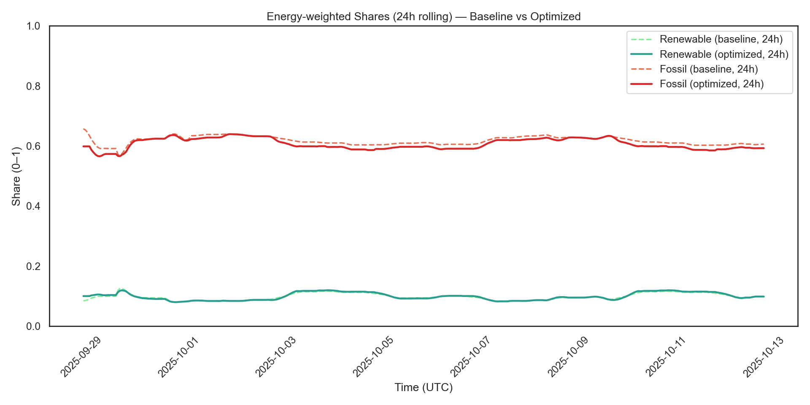

Energy, made a little clearer.Machine learning · Energy
RizzTheGrid
I built a platform that predicts hourly carbon intensity and renewable energy supply across 50+ U.S. regions using PyTorch. An RL scheduling engine explores lower-carbon EV charging, while the dashboard makes saved results inspectable.
Behind the build
The problem
Carbon intensity and renewable supply change over time and across regions. Useful energy planning needs both a forecast and a way to understand the assumptions behind a recommendation.
My contribution
I built a regional forecasting and scheduling project using PyTorch. The public dashboard connects state-level results, comparison plots, and a renewable-capacity planner.
Reported project outcome
18% lower forecast error and processing of 1M+ data points daily, as documented in my résumé. The saved simulation below is a separate, inspectable artifact.
Inside the public dashboard
Follow a result from data to decision.
Select a component to examine its implementation and the constraint it carries.
One regional context, several views.
The dashboard parses a saved CSV and indexes normalized state names. A D3/TopoJSON map uses the selected state’s FIPS identifier to connect the result summary, plot gallery, and planner.
- Implementation choice
- Load the saved result table once, then look up the selected region.
- Constraint to understand
- These are stored simulation results, not live measurements of the grid. Reductions in the table use percentage points.
Keep the evidence beside the summary.
The gallery indexes six numbered plots per state through Vite. Switching the selected state resets the gallery, while arrows and swipe gestures let visitors compare baseline and optimized views.
- Implementation choice
- Serve precomputed figures alongside the regional metrics.
- Constraint to understand
- Browsing a different plot changes the evidence on screen; it does not rerun a forecast in the browser.
A useful feature still needs request limits.
The plot-explanation path first sends an image URL. Its fallback converts the image to JPEG, caps the largest dimension at 1,400 pixels, and uses quality 0.85.
- Documented reason
- Source comments explicitly connect resizing to smaller request payloads and avoiding server errors.
- Tradeoff
- Compression reduces image detail. A 20-second timeout and JSON validation bound the request and check the response format.
A scenario is only as useful as its assumptions.
The planner combines a saved fuel breakdown with user-selected solar and wind capacity. Added renewable energy displaces fossil generation first; other sources remain fixed.
- Implementation choice
- Translate capacity into an average daily energy balance. Slider bounds expand so either technology can reach the coverage target.
- Constraint to understand
- 100% average daily coverage does not establish hourly reliability. The implementation explicitly notes storage and transmission considerations.